# perform some calculations
2 + 2[1] 45 * 3[1] 1515 / 3[1] 510^3[1] 1000exp(10) # e^10[1] 22026.47FILES: BLANK lecture-1.pdf, lecture-1.tex, and style-lectures.sty
FILES: in-class-1.tex and style-assessments.sty
Instructors can contact me for keys :)
FILES: out-class-0.zip
Follow along with the information (and watch the video) on the following page: amazing site 1
Watch the video on the following page: amazing site 2
Using a .qmd file, create and render an html file that has the content shown below (optionally google how to insert pictures and insert cat meme :)
Submit your html file to canvas.
FILES: intro-to-r-STARTER.qmd and intro-to-r.html
This document is built to get us started with working in R.
Can use R as a fancy calculator.
# perform some calculations
2 + 2[1] 45 * 3[1] 1515 / 3[1] 510^3[1] 1000exp(10) # e^10[1] 22026.47Good programming practice is to name objects intuitively so that your code is readable.
# name object
grade <- 85
grade + 5[1] 90A vector is a long string of values held together.
# make a vector of names and vector of corresponding grades
grades <- c(85,80,92,98,77)
grades[1] 85 80 92 98 77students <- c("a","b","c","d","e")
students[1] "a" "b" "c" "d" "e"To check data types, use the class() or str() functions. To check what each function does, we can bring up the help page with ?<function name>.
# show help page
?class
?str# check data types
class(grades)[1] "numeric"str(grades) num [1:5] 85 80 92 98 77class(students)[1] "character"str(students) chr [1:5] "a" "b" "c" "d" "e"When working with vectors, legal operations depend on the data types.
# perform operations on vectors
grades + 5[1] 90 85 97 103 82mean(grades)[1] 86.4students + 5 # can't do addition with wordsError in students + 5: non-numeric argument to binary operatorpaste("Student", students) # can append strings [1] "Student a" "Student b" "Student c" "Student d" "Student e"To subset vectors, use “square bracket indexing”. We can get creative when indexing and also specify multiple indices using the c() function. Another quick trick for integer counting vector using : operator.
# subset vectors in various ways
students[1][1] "a"students[-1] # print all except the first value[1] "b" "c" "d" "e"grades[c(1,3,5)][1] 85 92 77grades[-c(2,4)][1] 85 92 77# use ":" operator to subset
2:5[1] 2 3 4 5students[2:5][1] "b" "c" "d" "e"Boolean (aka logical) vectors are another data type. These are super useful for referencing items with characteristics we want to keep/remove.
# create a boolean vector and use it to subset a vector based on a condition
grades > 90 # evaluate whether value is greater than 90[1] FALSE FALSE TRUE TRUE FALSEgrades[grades > 90] # show only values that meet condition[1] 92 98students[grades > 90][1] "c" "d"Functions take some object and do something with it.
# example functions we have already used
str(names)function (x) mean(grades)[1] 86.4c(1,3,5)[1] 1 3 5Can also define our own functions and then use them like normal.
# write a function to add half of missed points back to all grades and calculate the average after the curve
curved_mean <- function(x){
mean(0.5 * x + 50)
}
# check how much the curve impacted the average grade
curved_mean(grades) - mean(grades)[1] 6.8Nesting functions is very useful for “chaining” results together.
# example of nesting functions
x <- c(-1, 3, 1, 6, 4, 9, -3, -2)
mean(abs(x))[1] 3.625# -> this is equivalent to saving this first (inside) result, then using that as the argument for the next (outside) function
y <- abs(x)
mean(y)[1] 3.625We can think of data frames as a rectangular spreadsheet, row = observation and column = variable. These can be created easily with data.frame().
# create a dataframe by combining vectors of the same length
data_grades <- data.frame(students, grades)
data_grades students grades
1 a 85
2 b 80
3 c 92
4 d 98
5 e 77# can specify the column names
data_grades <- data.frame(Name = students, Before_Curve = grades)
data_grades Name Before_Curve
1 a 85
2 b 80
3 c 92
4 d 98
5 e 77To focus on a subset of a data frame, use square brackets defining [rows,cols].
# subset dataframe in various ways
data_grades[1:3, ] # rows 1-3, all columns Name Before_Curve
1 a 85
2 b 80
3 c 92data_grades[ , 1] # all rows, column 1[1] "a" "b" "c" "d" "e"data_grades[-c(1,3), -1] # exclude rows 1-3, exclude column 1[1] 80 98 77We can also use dataframes that were read in from spreadsheets or R packages.
# look at pre-loaded dataframe
# -> notice that each column is a vector with its own data type
data("iris")
str(iris)'data.frame': 150 obs. of 5 variables:
$ Sepal.Length: num 5.1 4.9 4.7 4.6 5 5.4 4.6 5 4.4 4.9 ...
$ Sepal.Width : num 3.5 3 3.2 3.1 3.6 3.9 3.4 3.4 2.9 3.1 ...
$ Petal.Length: num 1.4 1.4 1.3 1.5 1.4 1.7 1.4 1.5 1.4 1.5 ...
$ Petal.Width : num 0.2 0.2 0.2 0.2 0.2 0.4 0.3 0.2 0.2 0.1 ...
$ Species : Factor w/ 3 levels "setosa","versicolor",..: 1 1 1 1 1 1 1 1 1 1 ...FILES: probability-STARTER.qmd and probability.html
This document will investigate probability calculations based on some of the discrete and continuous distributions we learned in class. We will calculate them manually to learn more about basic calculations and function writing in R and then use R distribution functions. Additionally we will make some basic plots.
The main notes include the binomial, geometric, exponential, poisson, and normal distributions. The extra notes include the hypergeometric, negative binomial and gamma distributions.
First we will calculate binomial probabilities manually using the pdf.
If \(X \sim \text{Binomial}(n,p)\), then \(f(x) = {n \choose x}\, p^x\, (1 - p)^{n - x}\). If using this for calculations in R, we need to use the choose() function to do the combination, and then could write choose(n,x) * p^x * (1-p)^(n-x).
To practice this, let \(X \sim \text{Binomial}(n = 10, p = 0.3)\).
It is good programming practice to not hard-code anything, use variables (especially when repeating calculations).
# initialize parameters
n <- 10
p <- 0.3Now we can calculate several different probabilities the same way we do by hand:
\[P(X \in A) = \sum_{x \in A} f(x)\]
We just need to calculate find \(f(x)\) for all of the \(x\) values of interest and then add with sum(). Remember that we are working with a discrete random variable. So we need to be careful with \(>\) and \(<\) vs \(\ge\) and \(\le\).
We can also use the complement rule as needed:
\[P(X \in A) = 1 - \sum_{x \notin A} f(x)\]
# P(X = 2)
x <- 2
choose(n,x) * p^x * (1-p)^(n-x)[1] 0.2334744# P(X >= 2) = 1 - P(X <= 1)
x <- 2:n
sum(choose(n,x) * p^x * (1-p)^(n-x))[1] 0.8506917x <- 0:1
1 - sum(choose(n,x) * p^x * (1-p)^(n-x))[1] 0.8506917# P(X < 5)
x <- 0:4
sum(choose(n,x) * p^x * (1-p)^(n-x))[1] 0.8497317If you notice you are doing the same thing over and over, we can write a function to make it easier to reuse.
# write function for the binomial pdf
f_x_binom <- function(n,p,x) {
choose(n,x) * p^x * (1-p)^(n-x)
}Then we can use this to find probabilities the same way.
Note that when using the function arguments are used by position they are specified in if they are not named. So better practice is to name the arguments to be safe.
# find P(X < 5) using your function
sum(f_x_binom(10, 0.3, 0:4))[1] 0.8497317sum(f_x_binom(n = 10, p = 0.3, x = 0:4))[1] 0.8497317R has lots of built in functions for distributions. This is the recommended way to do all the calculations.
For all of the distributions there are 4 common functions:
d<dist>() gives the density \(f(x)\) value.
p<dist>() gives the cdf probability \(F(x) = P(X \le x)\).
q<dist>() gives the percentile value, the \(x\) such that \(P(X \le x) = p\).
r<dist>() generates a random value from the distribution.
So for the binomial distribution, to calculate probabilities using the pdf, we need to use dbinom(). Because this is a discrete distribution, this will return \(f(x) = P(X = x)\).
# find P(X < 5) with R function for the pdf
dbinom(x = 0:4, size = 10, prob = 0.3)[1] 0.02824752 0.12106082 0.23347444 0.26682793 0.20012095sum(dbinom(x = 0:4, size = 10, prob = 0.3))[1] 0.8497317To use the binomial cdf, which gives \(F(x) = P(X \le x)\), use pbinom().
# find P(X < 5) with R function for the cdf
pbinom(q = 4, size = 10, prob = 0.3)[1] 0.8497317By default, pbinom() gives the left-tail probability. We can also specify the argument lower.tail = FALSE to return the right-tail probability (survival probability) $S(x) = P(X > x) = 1 - F(x) = $.
Note that lower.tail = TRUE is the default value, which means that is what it is set to even if we don’t specify it.
# find P(X > 5) using pbinom() both ways (right tail and complement of cdf)
pbinom(q = 5, size = 10, prob = 0.3, lower.tail = FALSE)[1] 0.047348991 - pbinom(q = 5, size = 10, prob = 0.3)[1] 0.04734899It is also really easy to visualize distributions in R by creating simple plots. To create a plot, we use the plot() function. This function can make many different plots depending on the arguments we specify. To make a discrete pmf plot, we want type = "h".
Now let \(X \sim \text{Binomial}(n = 12, p = 0.4)\).
# initialize parameters and range of random variable
n <- 12
p <- 0.4
x <- 0:n
# now plot and add labels
plot(x = x, y = dbinom(x = x, size = n, prob = p), type = "h", xlab = "x", ylab = "f(x)", main = "Binomial(12,0.4) pmf")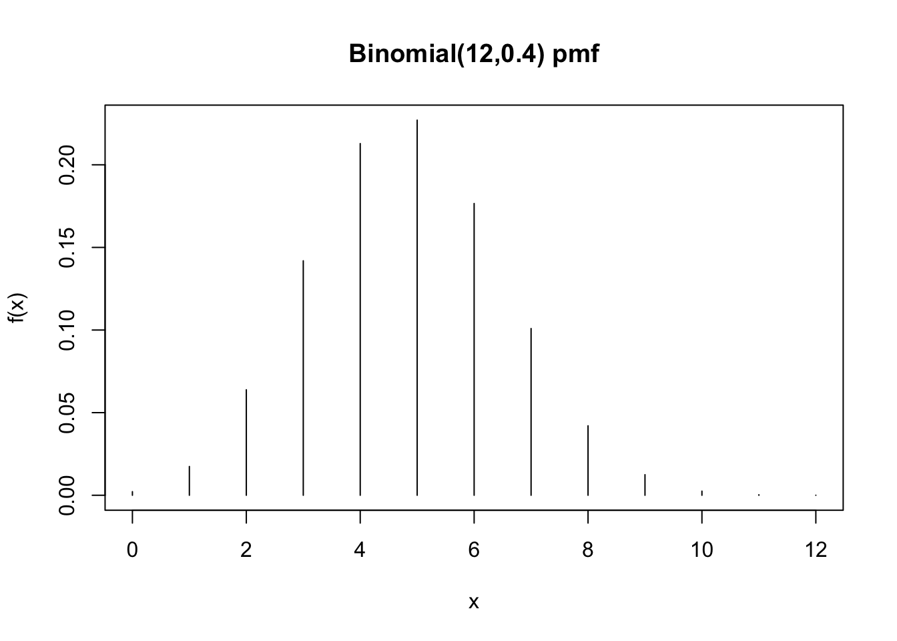
To practice more calculations, we can manually find the expected value of the binomial distribution, which we know should equal \(E(X) = np\).
For any discrete random variable, \[E(X) = \sum x f(x)\]. This can easily be done with vector calculations.
# calculate expected value (by definition)
# -> check against binomial shortcut formula
sum(x * dbinom(x = x, size = n, prob = p))[1] 4.8n * p[1] 4.8If \(X \sim \text{Geometric}(p)\), then \(f(x) = (1-p)^{x-1} p\).
To practice this, let \(X \sim \text{Geometric}(p = 0.3)\).
Again we will initialize the parameter to reuse.
# initialize parameter
p <- 0.3Now we can calculate some probabilities manually using the pdf just like with the binomial distribution.
# P(X = 3)
x <- 3
(1-p)^(x-1) * p[1] 0.147Keep in mind that our geometric random variable is counting the Number of trials to get the first success, which means the range is \(\cal{X} = 1, 2, \ldots\) and is therefore unbounded. So to find a right-tailed probability manually, we need to use the complement.
# P(X >= 4) = 1 - P(X <= 3)
x <- 1:3
1 - sum((1-p)^(x-1) * p)[1] 0.343Or we can write our own geometric pmf function for geometric to use.
# write your own function
f_x_geo <- function(p,x) {
(1-p)^(x-1) * p
}
# find P(X < 5) = P(X <= 4) using your function
sum(f_x_geo(p = 0.3, x = 1:4))[1] 0.7599Built in R functions are however the recommended way to calculate probabilities for distributions. We just have to make sure we are using them correctly.
Just like with the binomial, we will use the d<dist>() to find the \(f(x)\) probabilities of interest. For geometric, it is dgeom().
But first we need to look at the help documentation ?dgeom() in the ‘Details’ section. Here we see that R is using the alternate form of the geometric distribution that is counting the number of failures until the first success (\(f(y) = (1-p)^y p, \, y = 0,1,\ldots\)). As a result, we need to convert our \(x\) values to \(y = x - 1\) before using this function.
# find P(X < 5) using R functions
# -> transform x (number of trials) to y = x - 1 (number of failures) first
x <- 1:4
y <- x - 1
sum(dgeom(x = y, prob = 0.3))[1] 0.7599Then we can use the cdf function pgeom() to find \(F(x) = P(X \le x) = P(Y \le x - 1)\).
# P(X < 5) = P(Y < 4) = P(Y <= 3)
pgeom(q = 3, prob = 0.3)[1] 0.7599We can visualize the geometric pmf in the same way as the binomial. Because of the unbounded range, we can just define a “reasonable” range of \(y = x - 1\) values.
# let X ~ geometric(p = 0.5)
# define the (reasonable) range of the random variable
x <- 1:15
y <- x - 1
plot(x = x, y = dgeom(x = y, prob = 0.5), type = "h", xlab = "x", ylab = "f(x)", main = "Geometric(0.5) pmf")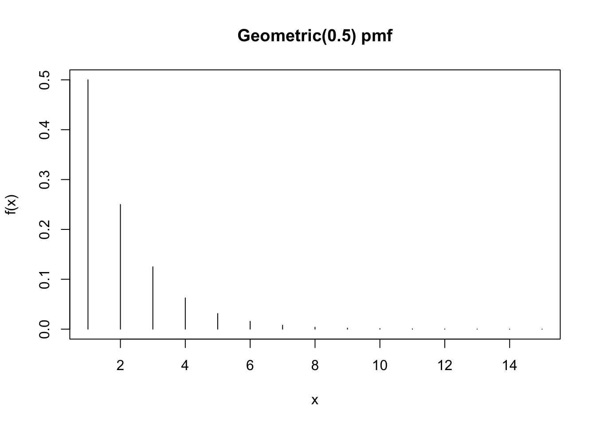
If \(X \sim \text{Exponential}(\lambda)\), then \(f(x) = \lambda e^{-\lambda x}\).
To practice this, let \(X \sim \text{Exponential}(\lambda = 0.75)\).
For continuous distributions, the code is more or less the same. Just a few things we have to take into account because of the change in type of variable.
For a continuous distribution like exponential, we have to integrate to find probabilities manually. R can do integrals with the integral() function, but much easier to use the specific distribution functions.
For continuous distributions, the density function d<dist>() still returns \(f(x)\), but now this value is just used to define the height of the density curve. So we do not want to use dexp() to find probabilities via the pdf.
All probabilities should be found using distribution (cdf) function p<dist>(), which for exponential is pexp(). Thus returns \(F(x) = P(X \le x)\) and the survival probability with \(S(x) = 1 - F(x)\) with lower.tail = FALSE. The exponential functions use the rate parameterization of the distribution, so rate = lambda.
We can calculate all of the following different kinds of probabilities using the cdf:
Remember continuous variable, so \(< >\) or \(\le \ge\) doesn’t matter: \(P(X < x) = P(X \le x)\):
Right-tailed probability, there are two ways to get this: \(P(X \ge x) = S(x)\).
Interval probability: \(P(a \le X \le b) = F(b) - F(a)\).
# P(X < 3)
pexp(q = 3, rate = 0.75)[1] 0.8946008# P(X >= 4)
pexp(q = 4, rate = 0.75, lower.tail = FALSE)[1] 0.04978707# P(2.5 < X < 7)
pexp(q = 7, rate = 0.75) - pexp(q = 2.5, rate = 0.75)[1] 0.1481074If visualizing a continuous distribution, we can use seq() to specify more \(x\) values (with smaller “steps”) and use dexp() to specify the y = f(x) values of the density curve.
# visualize the distribution
# -> specify reasonable range of the continuous random variable
x <- seq(from = 0, to = 5, by = 0.01)
plot(x = x, y = dexp(x, rate = 0.75), type = "l", xlab = "x", ylab = "f(x)", main = "Exponential(0.75) pdf")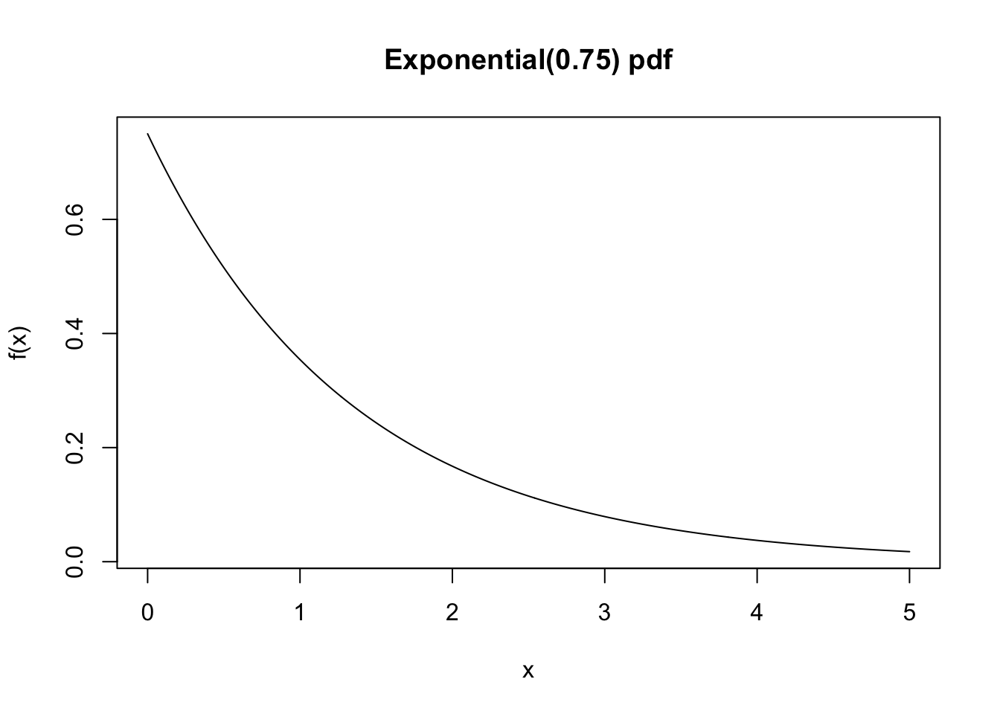
If \(X \sim \text{Poisson}(\lambda)\), then \(f(x) = \frac{\mathrm{e}^{-\lambda} \lambda^x}{x!}\).
(Would need exp() and factorial() functions to calculate this manually)
To practice this, let \(X \sim \text{Poisson}(\lambda = 5)\).
Find the following probabilities using both dpois() and ppois() (answers should match).
# P(X <= 7)
sum(dpois(x = 0:7, lambda = 5))[1] 0.8666283ppois(q = 7, lambda = 5)[1] 0.8666283# P(X > 4) = 1 - P(X <= 4)
1 - sum(dpois(x = 0:4, lambda = 5))[1] 0.55950671 - ppois(q = 4, lambda = 5)[1] 0.5595067ppois(q = 4, lambda = 5, lower.tail = FALSE)[1] 0.5595067Now we can visualize the Poisson pmf.
# create a plot to visualize the pmf
# define the (reasonable) range of the random variable
x <- 0:20
plot(x = x, y = dpois(x = x, lambda = 5), type = "h", xlab = "x", ylab = "f(x)", main = "Poisson(5) pmf")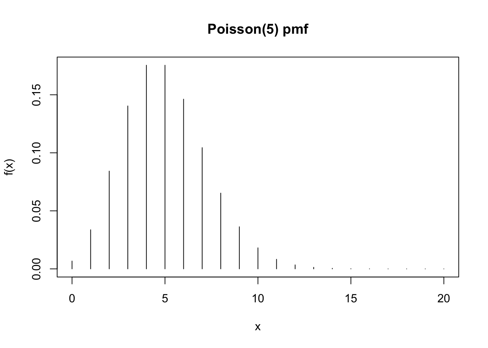
Let \(X \sim \text{Normal}(\mu = 10, \sigma^2 = 4)\).
Calculate the following probabilities.
# P(X < 8)
# -> pnorm() requires the sd, not the variance
pnorm(q = 8, mean = 10, sd = 2)[1] 0.1586553# P(X >= 9)
pnorm(q = 9, mean = 10, sd = 2, lower.tail = FALSE)[1] 0.69146251 - pnorm(q = 9, mean = 10, sd = 2, lower.tail = TRUE)[1] 0.6914625# P(7 < X < 13)
# -> interval probability -> F(x2) - F(x1)
pnorm(q = 13, mean = 10, sd = 2) - pnorm(q = 7, mean = 10, sd = 2)[1] 0.8663856# P(Z > 1)
# -> Z ~ Normal(mu = 1, sd = 1), so just change the arguments to match the new normal dist
pnorm(q = 1, mean = 0, sd = 1)[1] 0.8413447Visualize the distribution with dnorm() to specify the \(y = f(x)\) values of the density curve.
# visualize the distribution
x <- seq(from = 3, to = 17, by = 0.01)
plot(x = x, y = dnorm(x, mean = 10, sd = 2), type = "l", xlab = "x", ylab = "f(x)", main = "Normal(10,2) pdf")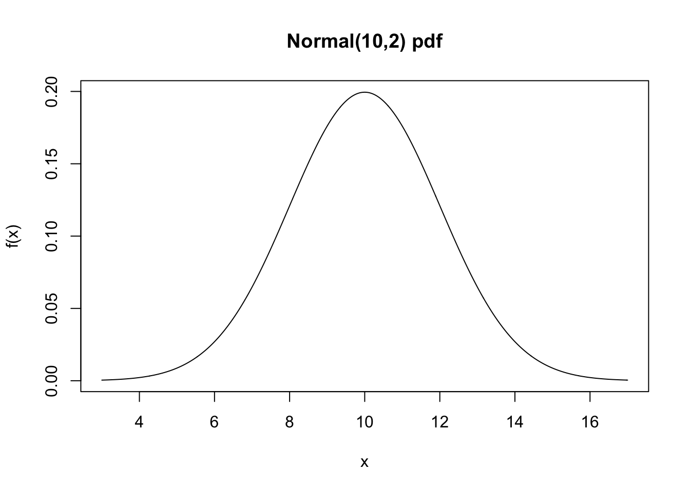
Below are some brief notes on the a few of the distributions that we covered in class that were not covered above.
NOTE that need to pay attention to the parameterization that R uses, slightly different than what we used in class.
Let \(X \sim \text{Hypergeometric}(N = 90, M = 9, K = 16)\).
pmf: \(f(x) = {M \choose x} {{N-M} \choose {k-x}} / {N \choose k}\)
Our parameters: \(N\) = population size, \(M\) = number of objects of interest, \(K\) = sample size
In R, $m = $ number of objects of interest (= our \(M\)), \(n\) = number of objects not of interest = \(N - M\), \(k\) = sample size (= our \(K\)).
Calculate probabilities using dhyper() and phyper().
# P(X <= 4)
# -> X is still counting the number of objects of interest selected
sum(dhyper(x = 0:4, m = 9, n = 90 - 9, k = 16))[1] 0.9921035phyper(q = 4, m = 9, n = 81, k = 16)[1] 0.9921035# P(X > 2) = 1 - P(X <= 2)
1 - sum(dhyper(x = 0:2, m = 9, n = 81, k = 16))[1] 0.19629711 - phyper(q = 2, m = 9, n = 81, k = 16)[1] 0.1962971phyper(q = 2, m = 9, n = 81, k = 16, lower.tail = FALSE)[1] 0.1962971Visualize the distribution.
# visualize the distribution
# define the range of the random variable
x <- 0:9
plot(x = x, y = dhyper(x = x, m = 15, n = 35, k = 9), type = "h", xlab = "x", ylab = "f(x)", main = "Hypergeometric(50,15,9) pmf")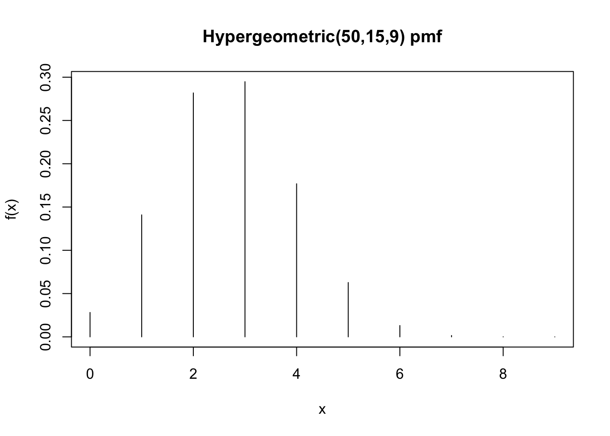
Let \(X \sim \text{Negative Binomial}(r = 3, p = 0.3)\).
pmf: \(f(x) = {{x-1} \choose {r-1}} p^r (1-p)^{x-r}\)
In R, (just like with the geometric distribution) negative binomial is counting the number of failures \(\Longrightarrow Y = X - r\).
Calculate the following probabilities using dnbinom() and pnbinom().
# P(X <= 11)
# -> range of x starts at r, which = 3
# -> size = r
# -> need to convert to y = number of failures (range is 0,1,2,...)
r <- 3
x <- r:11
y <- x - r
sum(dnbinom(x = y, size = r, prob = 0.3))[1] 0.6872595pnbinom(q = max(y), size = r, prob = 0.3) # cutoff is the highest x - r = max(y)[1] 0.6872595# P(X > 6) = 1 - P(X <= 6)
x <- r:6
y <- x - r
1 - sum(dnbinom(x = y, size = r, prob = 0.3))[1] 0.744311 - pnbinom(q = max(y), size = r, prob = 0.3)[1] 0.74431pnbinom(q = max(y), size = r, prob = 0.3, lower.tail = FALSE)[1] 0.74431Visualize the distribution
x <- r:30
y <- x - r
# going to plot our version of the NB
# -> so get probabilities according to Y, but match with the corresponding Xs
plot(x = x, y = dnbinom(x = y, size = r, prob = 0.2), type = "h", xlab = "x", ylab = "f(x)", main = "Negative Binomial(3,0.2) pmf")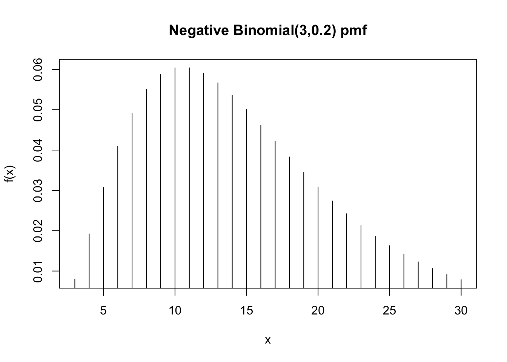
Let \(X \sim \text{Gamma}(\alpha = 3.5, \beta = 0.75)\).
In R, shape = $ and rate = \(\beta\).
Our \(\beta\) (just like in the exponential distribution) is a rate parameter, not a scale parameter = 1 / rate (so don’t specify scale =).
Calculate the following probabilities using pgamma() (remember we couldn’t find gamma probabilities by hand unless \(\alpha\) = whole number (but would require lots of integration by parts)).
# P(X < 5)
pgamma(q = 5, shape = 3.5, rate = 0.75)[1] 0.6212631# P(X >= 4)
pgamma(q = 4, shape = 3.5, rate = 0.75, lower.tail = FALSE)[1] 0.53974941 - pgamma(q = 4, shape = 3.5, rate = 0.75)[1] 0.5397494# P(2.5 < X < 7)
pgamma(q = 7, shape = 3.5, rate = 0.75) - pgamma(q = 2.5, shape = 3.5, rate = 0.75)[1] 0.6461156Visualize the distribution.
# visualize the distribution
x <- seq(from = 0, to = 20, by = 0.01)
plot(x = x, y = dgamma(x, shape = 3.5, rate = 0.75), type = "l", xlab = "x", ylab = "f(x)", main = "Gamma(3.5,0.75) pdf")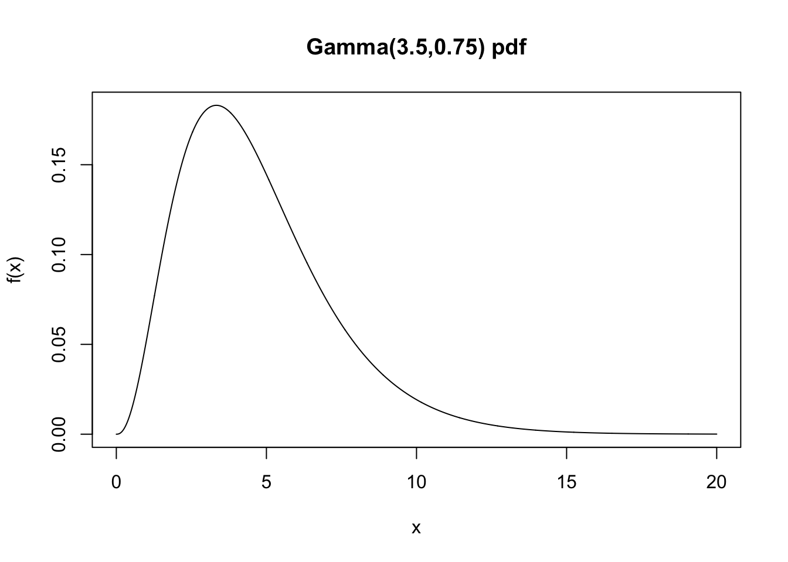
FILES: sampling-dists-STARTER.qmd and sampling-dists.html
This document will demonstrate the relationship between the different kinds of distributions we have now (population, sample and sampling distribution). This will involve learning to take random samples and conduct mini simulations to build a sampling distribution. We will demonstrate this for several of distributions / statistics.
Sampling distributions are the basis of the statistical inference we will learn (confidence intervals and hypothesis tests). So it will be important to conceptually understand what a sampling distribution is. To help with this, we are going to build (simulate) one! We are going to demonstrate this using the Normal distribution first.
With the addition of sampling distributions, we now have three different types of distributions that we need to understand.
1) Population distribution
This is all the distributions we studied in MATH 320 (all the plots made in the ‘Probability.R’ file we are thinking of as population distributions).
These are theoretical distributions that we are assuming to be true.
Let \(X \sim \text{Normal}\,(\mu = 50, \sigma = 10)\).
First we will initialize the parameters to reuse in the rest of the code.
# initialize parameters
mu <- 50
sigma <- 10Now we can plot the population distribution.
# visualize population distribution
x <- seq(from = mu - 3 * sigma, to = mu + 3 * sigma, by = 0.01)
plot(x = x, y = dnorm(x, mean = mu, sd = sigma), type = "l", xlab = "x", ylab = "f(x)", main = "Normal population distribution")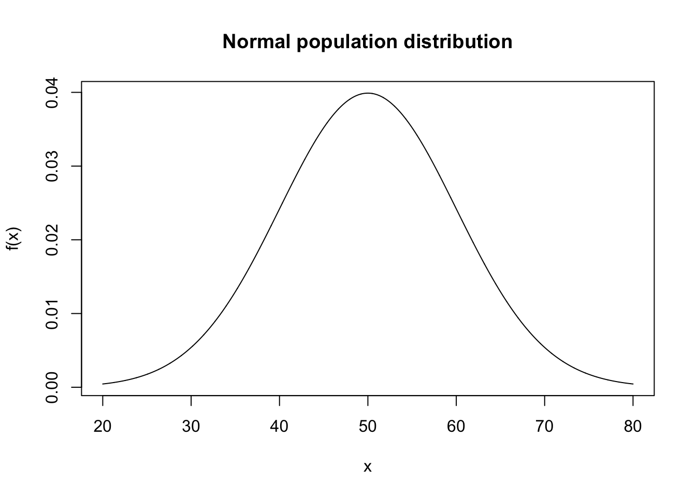
2) Sample (data) distribution
This is the result of randomly sampling from the population distribution (i.e. collecting data).
When simulating a random sample, we are essentially just generating \(x\) values whose probabilities of being selected follow the population distribution.
Lets take a random sample of size \(n = 30\), which means \(X \overset{iid}\sim \text{Normal}\,(\mu = 50, \sigma = 10)\). Use rnorm() to randomly generating observations from a normal distribution.
# initialize sample size and generate random sample
n <- 30
data_sample <- rnorm(n = n, mean = mu, sd = sigma)
data_sample [1] 48.43166 54.85217 34.91403 48.21068 50.23690 52.69379 57.93790 37.72459
[9] 53.29383 50.95798 38.52043 32.78676 44.68942 43.03404 50.05430 48.13014
[17] 46.08644 45.39412 53.20952 45.85008 47.78619 41.31832 60.59329 56.47356
[25] 49.96579 58.88280 46.75842 52.87937 67.85768 53.95503We can plot the sample (data) distribution with a histogram by using hist().
# visualize sample (data) distribution
hist(x = data_sample, xlab = "x", main = "Random sample from Normal population")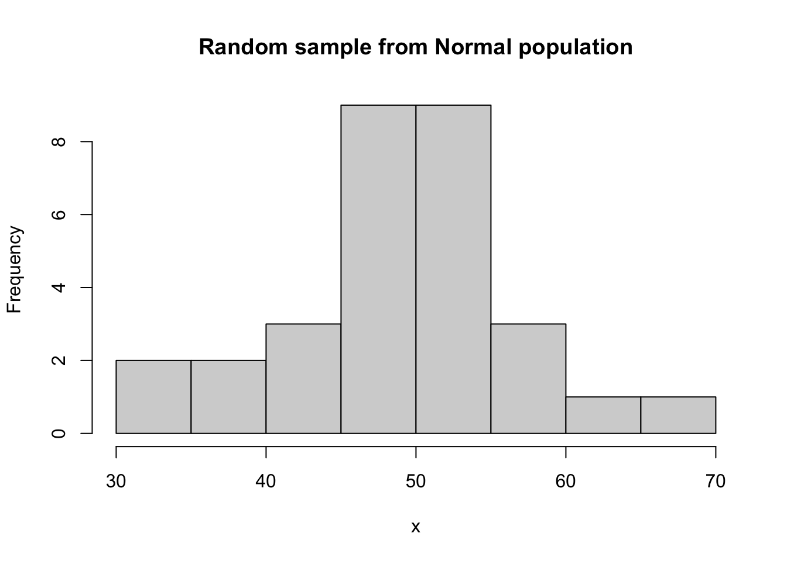
Every random sample that we take will look slightly different of course because of the randomness. But all of the sample distributions should match the properties of the population distribution they were drawn from. This means \(\bar{X} \approx \mu\), \(S \approx \sigma\), and roughly matches the shape. To check the summary statistics, use mean() and sd(). With larger sample sizes, the sample values will on average be closer to the population values.
# check summary statistics for our random sample
mean(data_sample)[1] 49.11597mu[1] 50sd(data_sample)[1] 7.667929sigma[1] 10To compare the shapes, we can add the population distribution curve to the sample distribution histogram.
First we need to plot the histogram like before, except specify freq = FALSE to make the y-axis relative frequency (probability) rather than frequency (count). Then use lines() to overlay the density curve.
# plot relative frequency histogram and add population density curve
hist(x = data_sample, freq = FALSE, xlab = "x", main = "Random sample from Normal population")
lines(x = x, y = dnorm(x, mean = mu, sd = sigma), col = "red")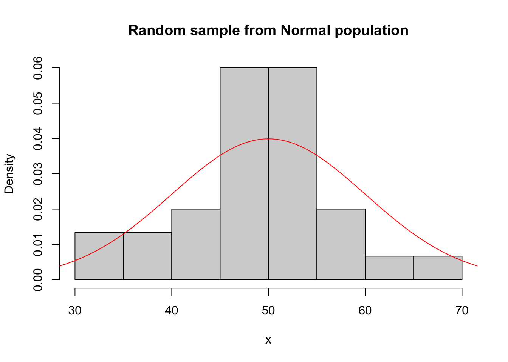
3) SamplING distribution
This is also a theoretical distribution of a statistic (like sample mean, \(\bar{X}\)) that occasionally ends up following a familiar distribution (depends on what population we start with).
But it can easily be simulated to get a really good approximation of the shape and summary statistics.
Now lets build up to a sampling distribution.
We already have a random sample of data, so lets record the sample mean.
# record the sample mean
x_bar <- c()
x_bar[1] <- mean(data_sample)We have now started a vector (distribution) of sample means, all we need to do is add a bunch more sample means to it. So we need to generate several random samples of data, calculate and record their respective sample means. To repeat calculations / operations many times, we can use a for loop.
# initialize our holding vector again
x_bar <- c()
for (i in 1:20) {
# i is the index, the for loop runs for each value of the index
# generate data
data_sample <- rnorm(n = n, mean = mu, sd = sigma)
# record sample mean
x_bar[i] <- mean(data_sample)
# once both of these are done, the for loop goes to the next index value and performs the loop again
}Now we have \(i = 20\) sample means calculated from 20 random samples of data. Lets plot them to see the beginnings of the sampling distribution.
# show sample mean values
x_bar [1] 50.10146 49.35539 47.00313 52.64353 48.81512 49.19360 52.20879 51.94868
[9] 50.02831 49.95325 50.61347 48.61472 51.99039 48.99885 52.57588 50.09879
[17] 54.72978 50.46928 48.22803 49.13747# plot sample means
hist(x = x_bar, freq = FALSE, xlab = "Sample mean", main = "(Start of) Sampling distribution from Normal population")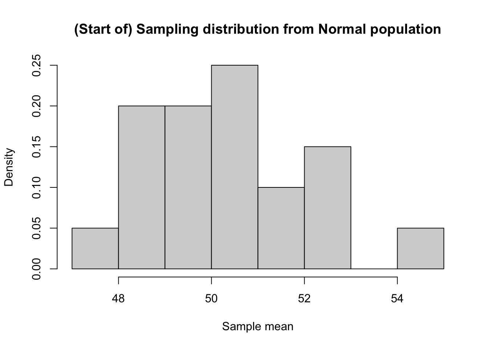
Lets continue building the sampling distribution. Theoretically the sampling distribution is the distribution of ALL POSSIBLE sample means. For a simulation, this just means calculate a very large number of them. So lets repeat the for loop, but for a very large \(i\).
# simulate 100,000 samples and calculate mean
x_bar <- c()
for (i in 1:100000) {
# generate data
data_sample <- rnorm(n = n, mean = mu, sd = sigma)
# record sample mean
x_bar[i] <- mean(data_sample)
}Now lets plot the sampling distribution of \(\bar{X}\). We will see that it is perfectly centered at the population mean, and also much less variable than the sample distribution (much smaller spread). To verify that, we can add the population mean to the plot for reference. Use abline(v = ) to add a vertical $x = $ line.
# plot sample means and add population mean reference line
hist(x = x_bar, freq = FALSE, xlab = "Sample mean", main = "Sampling distribution from Normal population")
abline(v = mu, col = "red")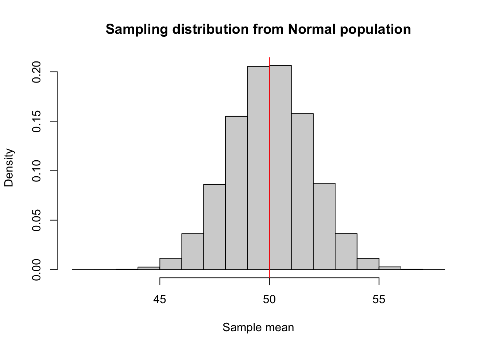
Lets look at the summary statistics for this new distribution and compare them to the population values.
Because we are studying the sample mean, the results should match the theorem we learned that \(E(\bar{X}) = \mu\) and \(V(\bar{X}) = \sigma^2 / n\). This is true regardless of population distribution.
# compare summary statistics of sampling distribution to theoretical results in terms of the population parameters
mean(x_bar)[1] 50.00638mu[1] 50var(x_bar)[1] 3.360183sigma^2 / n[1] 3.333333Then because we started with a normal distribution, we actually know exactly what distribution \(\bar{X}\) follows from another theorem. If \(X_i \overset{iid}\sim \text{Normal}\,(\mu = 50, \sigma = 10)\), then \(\bar{X} \sim \text{Normal}\,(\mu, \sigma^2 / n)\). Lets verify this by adding the density curve to the histogram of sample means, it should line up perfectly.
To generalize our specification of x which we need for lines(), we can generate a sequence of values that are three standard deviations sd(x_bar) from the center of the simulated sampling distribution mean(x_bar) in either direction. For most distributions, this will cover the range of values we need.
# add theoretical density curve to histogram of sampling distribution
hist(x = x_bar, freq = FALSE, xlab = "Sample mean", main = "Sampling distribution from Normal population")
x <- seq(from = mean(x_bar) - 3 * sd(x_bar), to = mean(x_bar) + 3 * sd(x_bar), by = 0.01)
lines(x = x, y = dnorm(x, mean = mu, sd = sigma/sqrt(n)), col = "red")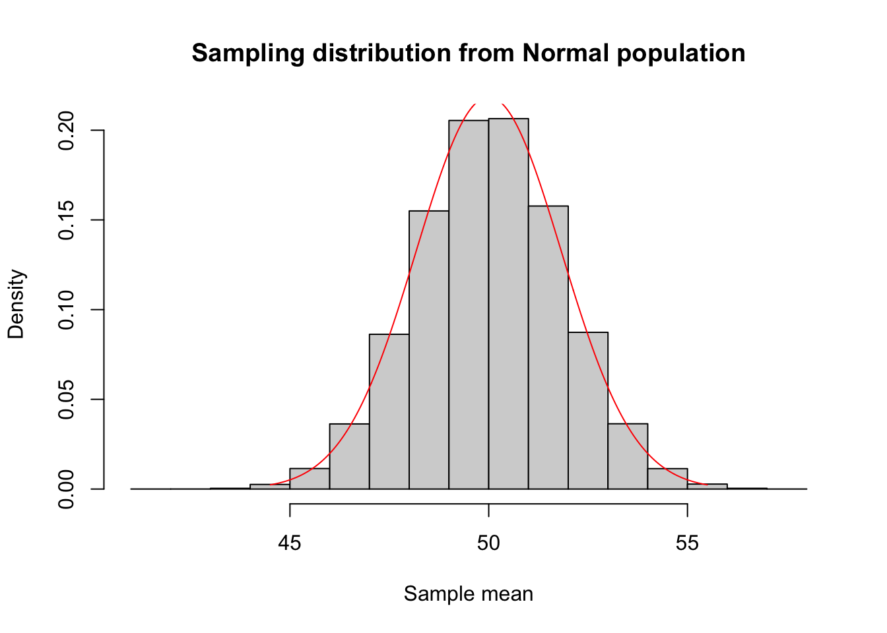
We can build sampling distributions for any statistic So lets repeat the process above for the sample variance \(S^2\) when drawing from a normal population. All we have to do different is calculate a different sample statistic inside the for loop for each of the generated samples.
# simulate sampling distribution for sample variance
s2 <- c()
for (i in 1:100000) {
# generate data
data_sample <- rnorm(n = n, mean = mu, sd = sigma)
# record sample mean
s2[i] <- var(data_sample)
}To show the first few observations, we can use head().
# display first 10 values
head(s2)[1] 138.91252 109.04852 110.39264 74.39573 58.51212 142.37100Now we can plot this new sampling distribution and add the population variance to the plot for reference as well.
# plot the sampling distribution of S^2 and add population value for reference
hist(x = s2, freq = FALSE, xlab = "Sample variance", main = "Sampling distribution from Normal population")
abline(v = sigma^2, col = "red")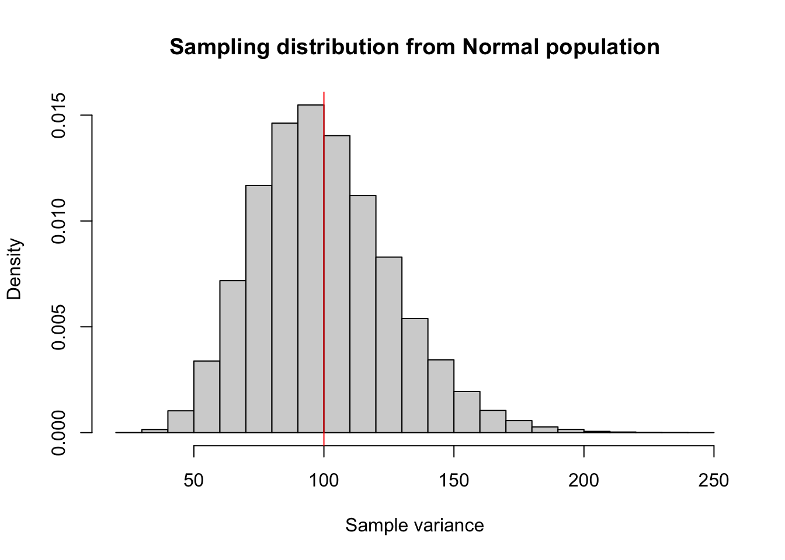
We know from a theorem that \(E(S^2) = \sigma^2\). So lets check the estimated mean of the sampling distribution and compare it to \(\sigma^2\).
# compare sampling distribution center to the population value
mean(s2)[1] 99.9877sigma^2[1] 100We don’t know what distribution \(S^2\) follows by itself, but we can modify it to match the theorem we have: \(\frac{n - 1}{\sigma^2} S^2 \sim \chi^2 (n-1)\).
# calculate and display modified sample variances
s2_modified <- (n - 1) * s2 / sigma^2
head(s2_modified)[1] 40.28463 31.62407 32.01387 21.57476 16.96852 41.28759Now we can plot this and compare it to the theoretical density it should follow. For the specification of \(x\), we know \(\chi^2\) is a special-case gamma density, which means it is right-skewed. So lets go to 4 standard deviations above to ensure our line has the correct range.
# plot modified sample variances and add theoretical density curve
hist(x = s2_modified, freq = FALSE, xlab = "Modified sample variance", main = "Sampling distribution from Normal population")
x <- seq(from = mean(s2_modified) - 3 * sd(s2_modified), to = mean(s2_modified) + 4 * sd(s2_modified), by = 0.01)
lines(x = x, y = dchisq(x, df = n - 1), col = "red")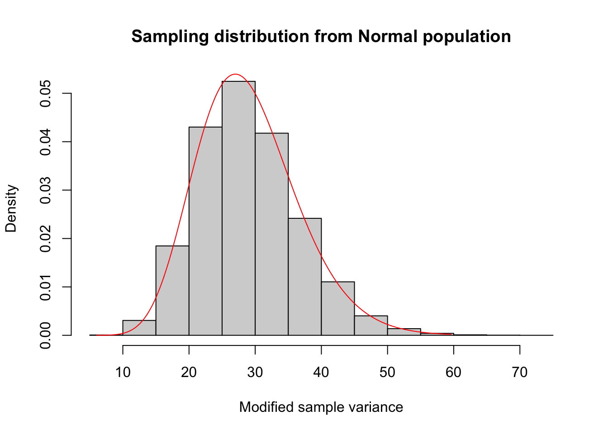
Goal is simulate the sampling distribution for the sample mean based on an exponential distribution.
Let \(X_i \overset{iid}\sim \text{Exp}\,(\lambda = 5)\) and use a sample size of \(n = 20\).
To generate a random sample from the exponential distribution, use rexp(), where rate = lambda.
# initialize necessary items
# -> parameter
# -> sample size
# -> holding vector for sample means
lambda <- 50
n <- 20
x_bar <- c()
# simulate sampling distribution for sample mean
for (i in 1:100000) {
# generate data
data_sample <- rexp(n = n, rate = lambda)
# record sample mean
x_bar[i] <- mean(data_sample)
}
# display values
head(x_bar)[1] 0.03090034 0.01476551 0.02480843 0.01890802 0.02015736 0.01418337Compare the summary statistics to the populations values (what they should be). For exponential, \(\mu = E(X) = 1 / \lambda\) and \(\sigma^2 = V(X) = 1 / \lambda^2\). Then apply the \(\bar{X}\) theorem.
# compare summary statistics to the correct population values
mean(x_bar)[1] 0.019999821 / lambda[1] 0.02var(x_bar)[1] 1.990227e-05(1 / lambda)^2 / n[1] 2e-05Because the scale is so small for the variance, by default R uses scientific notation. We can disable this with the following line.
# disable scientific notation
# recalculate values
options(scipen = 999)
var(x_bar)[1] 0.00001990227(1 / lambda)^2 / n[1] 0.00002Then because we started with an exponential distribution, we have already derived exactly what distribution \(\bar{X}\) follows: if \(X_i \overset{iid}\sim \text{Exp}\,(\lambda)\) then \(\bar{X} \sim \text{Gamma}\,(\alpha = n, \beta = n \lambda)\).
Lets verify this by adding the density curve to the histogram of sample means. Note for dgamma(), shape = alpha and rate = beta.
# plot sampling distribution of sample means and add theoretical density curve
hist(x = x_bar, freq = FALSE, xlab = "Sample mean", main = "Sampling distribution from Exponential population")
x <- seq(from = mean(x_bar) - 3 * sd(x_bar), to = mean(x_bar) + 4 * sd(x_bar), by = 0.001)
lines(x = x, y = dgamma(x, shape = n, rate = n * lambda), col = "red")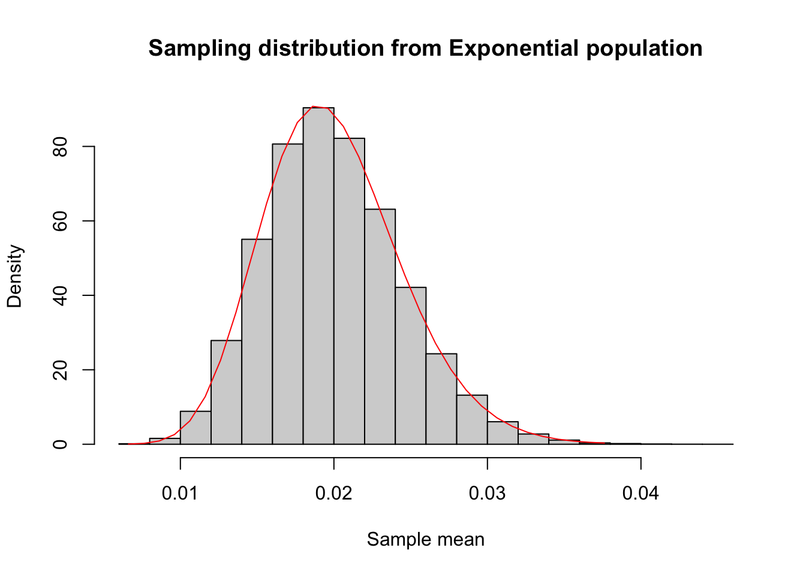
FILES: practice-sess-STARTER.qmd and practice-sess.html
Below are some basic problems to practice the concepts we have learned so far in R.
Suppose we have the following discrete pmf for X:
| \(x\) | \(f(x)\) |
|---|---|
| 2 | 0.20 |
| 4 | 0.13 |
| 5 | 0.07 |
| 8 | 0.21 |
| 10 | 0.14 |
| 11 | 0.09 |
| 13 | 0.14 |
# initialize vectors
x <- c(2, 4, 5, 8, 10, 11, 13)
f_x <- c(0.20, 0.13, 0.07, 0.21, 0.14, 0.09, 0.16)# E(X) = weighted average of x and f(x)
sum(x * f_x)[1] 7.42# calculate probability -> add corresponding probabilities where X > 7
sum(f_x[x > 7])[1] 0.6==.# find the X value with the highest probability
x[f_x == max(f_x)][1] 8# plot pmf
plot(x = x, y = f_x, type = "h", ylab = "f(x)", main = "Pmf of X")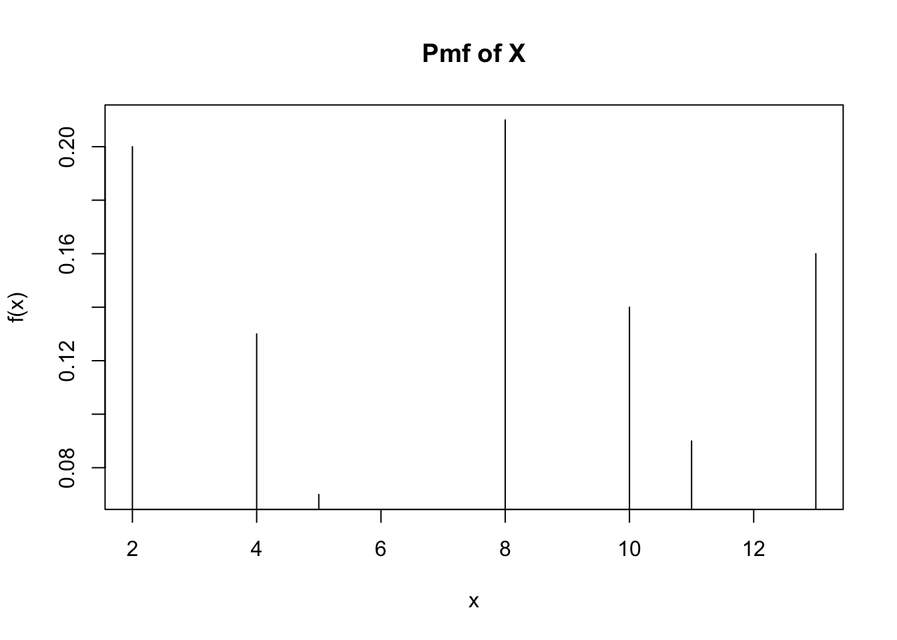
Generate a random sample from of size \(n = 100\) from \(\text{Gamma}(\text{shape } (\alpha) = 5, \text{rate } (\beta) = 2.5)\) and save it as a vector.
sum() on a logical check of your vector.# generate sample
data_sample <- rgamma(n = 100, shape = 5, rate = 2.5)
# count number of obs > 2
sum(data_sample > 2)[1] 44mean() on a logical check of your vector.# P(X < 1.5)
mean(data_sample < 1.5)[1] 0.4# equivalent to
sum(data_sample < 1.5) / length(data_sample)[1] 0.4# all summary measures at once
summary(data_sample) Min. 1st Qu. Median Mean 3rd Qu. Max.
0.5855 1.2209 1.7753 1.9856 2.4498 5.2723 # IQR = Q3 - Q1
quantile(data_sample, probs = 0.75) - quantile(data_sample, probs = 0.25) 75%
1.228842 # create boxplot
boxplot(data_sample, horizontal = TRUE)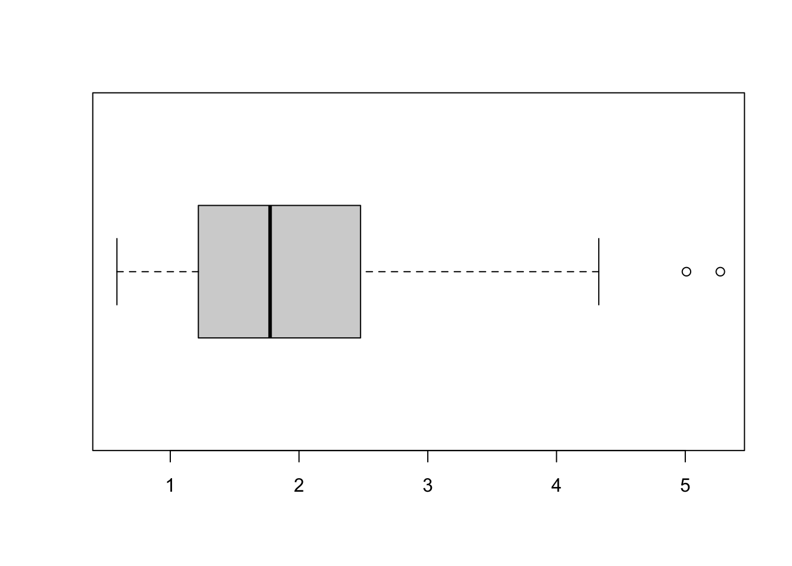
# extract outliers
boxplot(data_sample, horizontal = TRUE)$out[1] 5.272339 5.009112FILES: hw-1-STARTER.qmd, homework-1.tex, and style-assessments.sty
Instructors can contact me for solutions :)